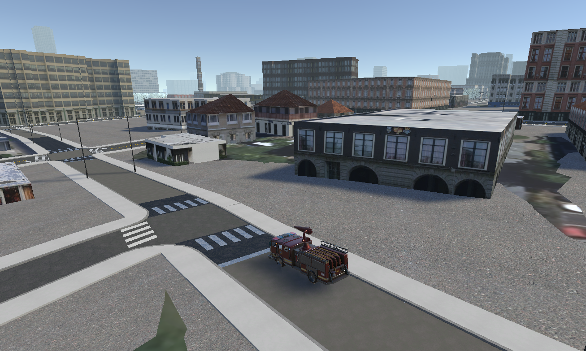

Interactive Fire Suppression Simulation
Experience realistic firefighting with a dynamic firetruck hose and aerial wildfire control in a detailed virtual environment.
Key Features and Workflow
Interactive Firetruck Control
Take control of a firetruck hose using realistic hardware inputs from the Logitech G920 steering wheel. Rotate the hose left and right for precise aiming, and activate the water spray with a dedicated button to simulate real firefighting actions.
Dynamic Fire Simulation
The fire on the house grows naturally over time thanks to a custom script that scales the flames realistically. Colliders on the fire particles enable interaction with the water spray for an immersive experience.
Realistic Water Spray Mechanics
Water is represented by particle effects that are initially disabled and only activate when the spray button is pressed. Each water particle has a collider that detects collision with the fire, triggering a scripted reduction in flame size to simulate extinguishing.
Problem Statement
Simulating Firefighting Techniques
The goal of this simulation is to train users in basic firefighting techniques through an immersive and interactive experience. This is achieved by focusing on two core challenges:
- Creating a Realistic Fire Environment
- Teaching Effective Fire Suppression
To simulate realistic firefighting scenarios, the project models dynamic fire behavior using particle systems and scaling scripts. Fires grow in size over time and interact physically with the surrounding environment, including buildings and trees. This allows users to understand how quickly fires can escalate and how they respond to suppression efforts.
Users control a firetruck equipped with a functional hose system. A water spray particle system, mapped to a steering wheel (Logitech G920), allows players to aim and activate the hose manually. Collision detection scripts respond to water particles hitting the fire, reducing the fire’s scale to simulate extinguishing.
The simulation emphasizes timing, positioning, and control accuracy. Players must learn to coordinate hose direction and spray timing effectively to manage growing fires. Through repetition and feedback, users gain a deeper understanding of how to contain and extinguish virtual fires.
Input

Input in Unity is abstracted into generic actions that are read out as a data type (bool for button, float for slider, etc). This way, the code doesn't have to worry about specific devices or combinations of devices. Mapping controllers to actions is as simple as pressing a button on the controller and listening for said button.
Environment
Location Building Data
We used ArcGIS CityEngine to extract a region of Corvallis. This region includes the location, size, and shape of buildings, trees, and roads. This data was exported as an fbx object and textures, and then imported into Unity. Cesium's Bing map data provides the visuals for the rest of the world, to ground the city model in it's location.
Logic
- 🔥 Igniting the Scene: Imported Unity’s Particle Pack and applied a fire effect to a house model to simulate a realistic blaze.
- 📈 Growing the Flames: Wrote a script that increases the fire’s scale over time, creating the illusion of a spreading and intensifying fire.
- 🧱 Fire Gets Physical: Added colliders to the fire so it can interact with other objects—especially water.
- 💧 Equipping the Firetruck: Designed a water spray particle system and attached it to the front of the firetruck’s hose.
- 🎮 User Control: Mapped hose rotation to the Logitech G920’s steering wheel, allowing players to aim the water manually.
- 🕹️ Triggering the Response: Set up a button on the G920 to activate the water spray, simulating firefighting on command.
- 🔄 Collision Detection: Gave the water particles colliders and scripted interactions to detect contact with fire particles.
- 🌧️ Fire Meets Water: When water hits the fire, the fire’s size is reduced dynamically—visually representing the extinguishing process.